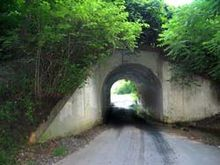

After the Civil War, Fairfax County, Virginia, USA became more populated, and eventually an insane asylum was built there. No one wanted to live near the asylum and because of the public outrage, the institution was then shut down later.
The administration transferred the patients in 1904, once the process was completed. During the transfer, some of the patients escaped and hid in the surrounding woods and forestry.
These individuals were lost, delusional, and dangerous. Most of them were found, except Marcus Lawster and Douglas Griffin. The local authorities found a trail made by the two men; it was littered with half eaten mutilated bunnies.
The trail led deep into the woods to a tunnel crossing a wide creek. There they found Marcus hanging from the tunnel entrance, with a note attached to his foot. It read, "You'll never find me no matter how hard you try!" Signed, The Bunny Man; that tunnel has been called Bunny Man Bridge ever since.
The legend says that if you walk all the way down to the tunnel at around midnight, the Bunny Man will grab and hang you from the entrance of the bridge.
Strange deaths and phenomena have constantly been connected with the Bunny Man Bridge. There was a young man from Clifton, Virginia who came upon the bridge while traveling. Later, he killed his parents and dragged their bodies into the woods to hang them from the bridge, before he killed himself. In 1943, three youths were found dead, hung from the bridge. Their bodies were slashed open and all had notes attached to their feet; all of which stated, "You'll never catch the Bunny Man!"
In 2001, after hearing the tale, six local students and a guide searched the area only to find mutilated bunny parts during their search. They soon left the forest after they heard noises and caught glimpses of figures in the woods.